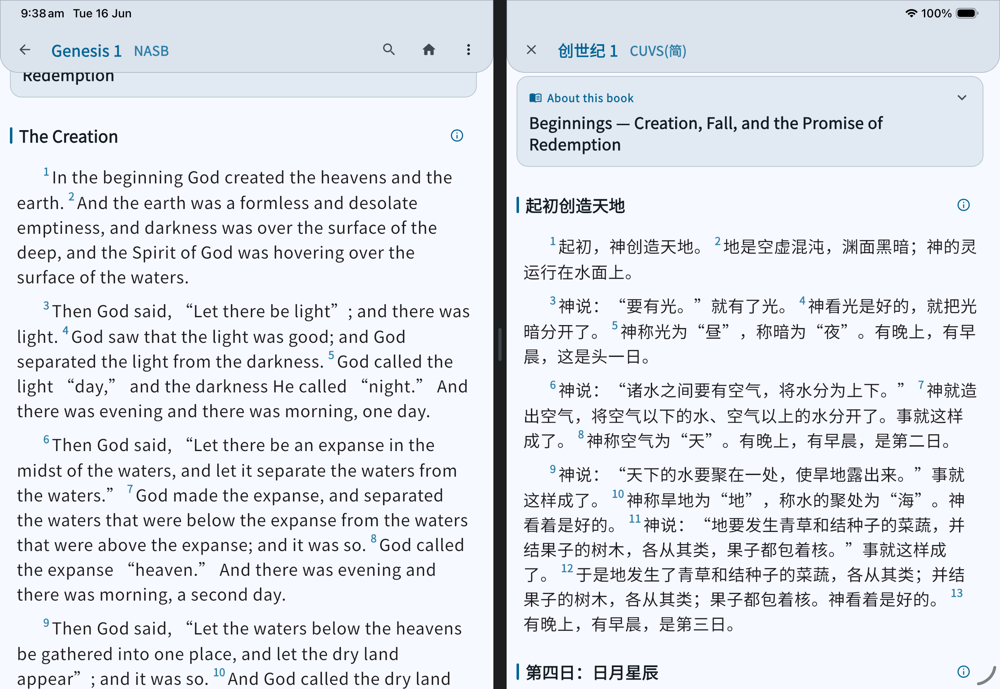
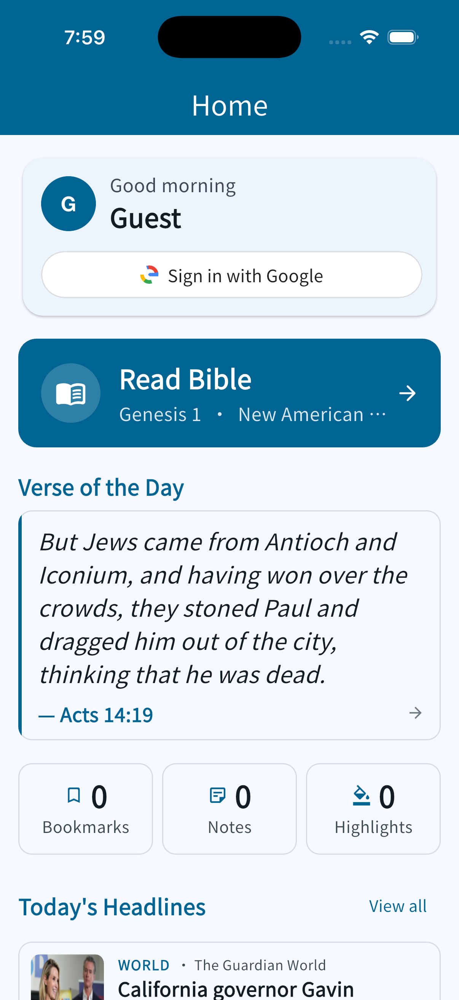
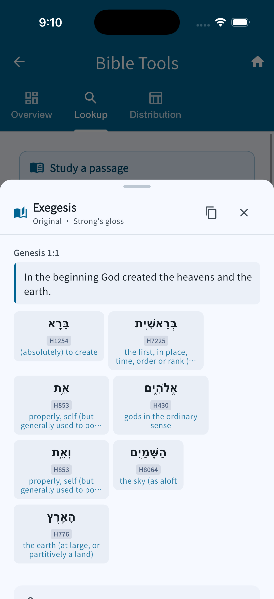
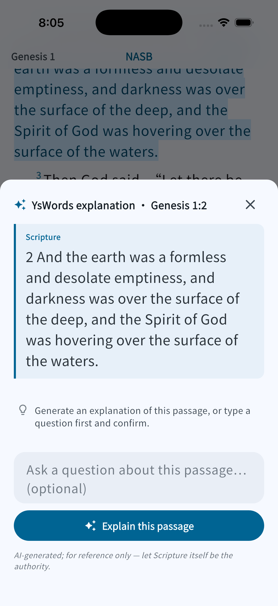
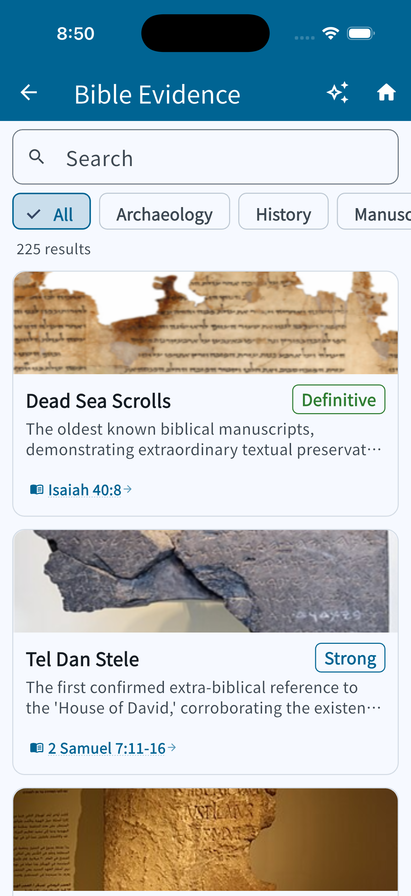

Two apps. Scripture and the world, side by side.
Free, bilingual (English / 简体中文), and built to be actually used — not just installed once. Try either one straight in your browser, no account needed.
Free, bilingual (English / 简体中文), and built to be actually used — not just installed once. Try either one straight in your browser, no account needed.
A bilingual Bible reader with AI-assisted word study, 13 translations, and a genuinely deep tool set for people who read the text closely.





| 🌐 Web | Open yswords.netlify.app | Works instantly in any modern browser — nothing to install. |
| 🤖 Android | Download APK | Enable "install from unknown sources" if prompted. |
| 🍎 iOS | Download unsigned .ipa | Needs your own Apple Developer account to sign and install — see the PWA option below for a no-signing path. |
| 💻 macOS | Download .zip | Unsigned — right-click → Open the first time to bypass Gatekeeper. |
| 🪟 Windows | Download .zip | Unpack and run the .exe inside. |
| 🐧 Linux | Download .tar.gz | x64 build; unpack and run. |
World news, read alongside Scripture — every headline is automatically paired by AI with a Bible verse and a short reflection connecting the two.
Illustrative preview — try the real thing below, it looks better live.
| 🌐 Web | Open news-insight.netlify.app | Works instantly in any modern browser — nothing to install. |
| 🤖 Android | Download APK | Enable "install from unknown sources" if prompted. |
| 🍎 iOS | Download unsigned build | Needs your own Apple Developer account to sign — see the PWA option below instead. |
| 💻 macOS | Download .zip | Unsigned — right-click → Open the first time to bypass Gatekeeper. |